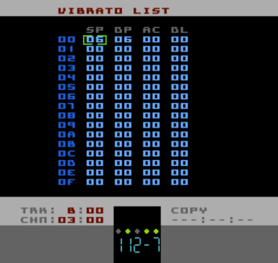

Vibrato List Page
Tracks A, B & C can use Vibrato to cyclically modulate the pitch of a playing note. (ref: Vibrato). Like an Envelope, a Vibrato is actually a Pulsar object that is made up of four parameters that desribe the character of the modulation. The numbers down the left-hand side of the Vibrato List are the numbers you specify in the VIBRATO parameter of Instruments or when using the Vibrato Command (Bxx). Each row of the Vibrato List is one Vibrato object.
From left-to-right the parameters are:
|
specifies the Speed of the Vibrato effect, range 00 to 0F |
|
specifies the depth of the Vibrato effect, the amount the pitch is modulated away from its original frequency, range 00 to 1F |
|
specifies Acceleration of the Vibrato effect. A value of 00 will mean that the Vibrato starts at the specified Depth (DP). Any other value will cause the Vibrato Depth to start at zero and build to the specified Depth. 01 is the slowest Acceleration, FF is the fastest |
|
specifies a Delay before Vibrato starts. The value is in 'ticks' and counts from the beginning of a new note. If you have Acceleration specified, the accelerating won't start until after the Delay |
PSWEEP-Q affects the speed of other effects (besides PSWEEP) and Vibrato speed is one of them. As a guide, a PSWEEP-Q setting of about 80 gives the most flexibility for Vibrato. Lower PSWEEP-Q values will eventually make the Vibrato sound 'steppy' (this is deliberate) and while higher PSWEEP-Q values are fine, if set too high the slowest Vibrato Speed (SP) setting won't be particularly slow.
Extra Vibrato Information
I'm using a sine table and fractional pitch frequencies to give the same perceived depth of pitch modulation over every octave. Because the number of entries in the sine table is an even number, when using some of the higher depth settings, an odd number in the SP column (01, 03 etc.) might make the pitch sound a bit off. There's not much I can do about this but it is only with extreme depth (DP) settings, which aren't particularly musical anyway!
Credit Where It's Due
I use blargg's smooth pitch modulation trick for click-free vibrato (and pitch sweep).